Drainage System
Date: Spring 2021
Institute: Duke University - Design+Health Fellowship
Skills: Prototyping, FEA Analysis, Photoshop, 3D Modeling, Clinical Immersion, Need Identification, Customer Requirement Development and Concept Creation
US Provisional Patent - April 29, 2021 - Device and Method of Managing Fluid Collections
Arlette Geller - Inventor - Securement Mechanism
Project Description:
Position: Design+Health Fellow
As an engineering member of a team of doctors, nurses, buisness students, we were joined by the mission of need identification and product design and development.
We were tasked with the development of a drainage system to address the following medical needs:
1. Clot prevention
2. Drain dislodgment
3. Infection risk and leakage
4. Discomfort for the patients and nursing staff
The Design:
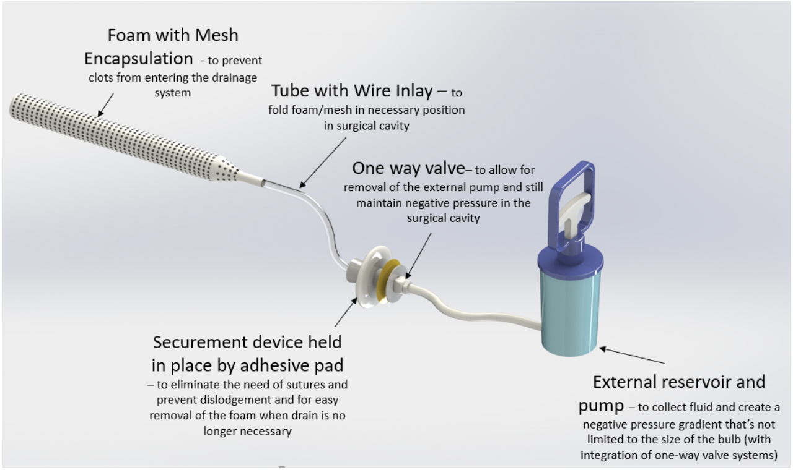
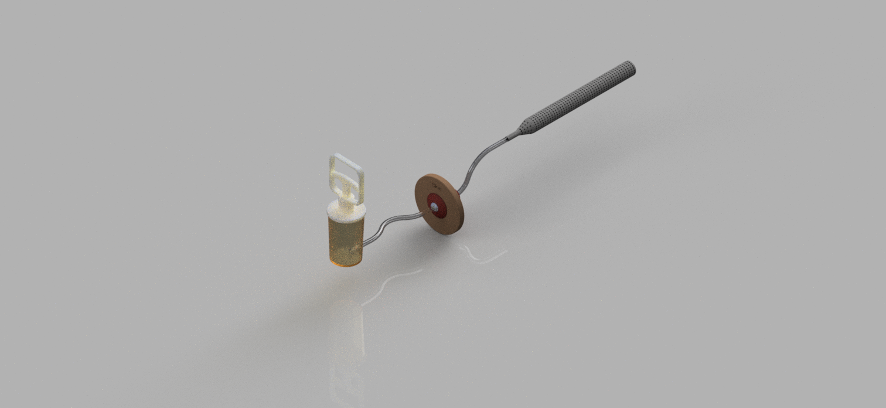
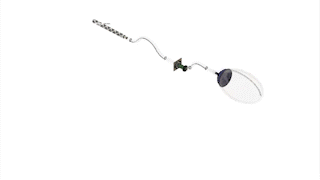
Interactive 3D Model
Left Click to Rotate | Scroll to Zoom | Right Click to Pan
Current Technologies:
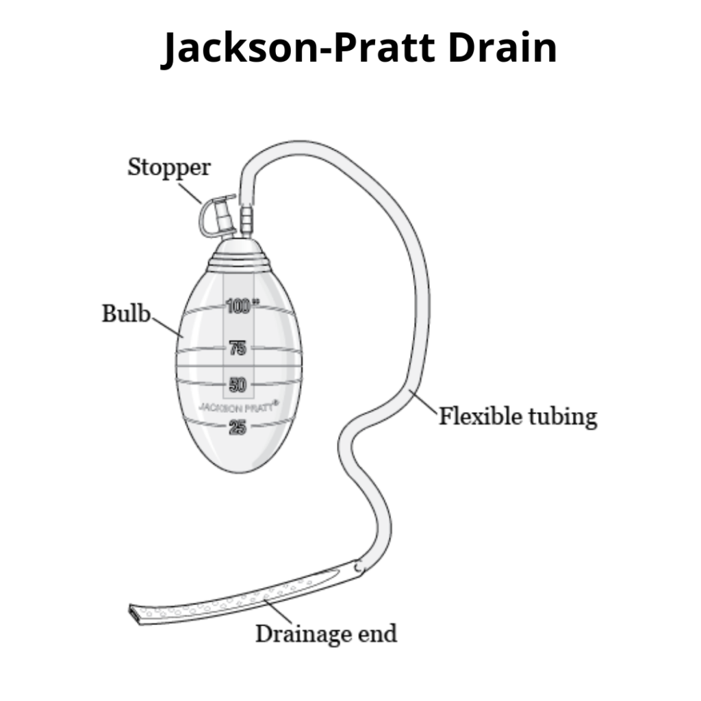
Individual Work - The Securement Device
Located at the incision site the securement device will hold the drain in place and seal the incision for protection.
Eliminates the need for sutures, prevents accidental dislodgment and allows attatchment and re-attatchment providing comfort.
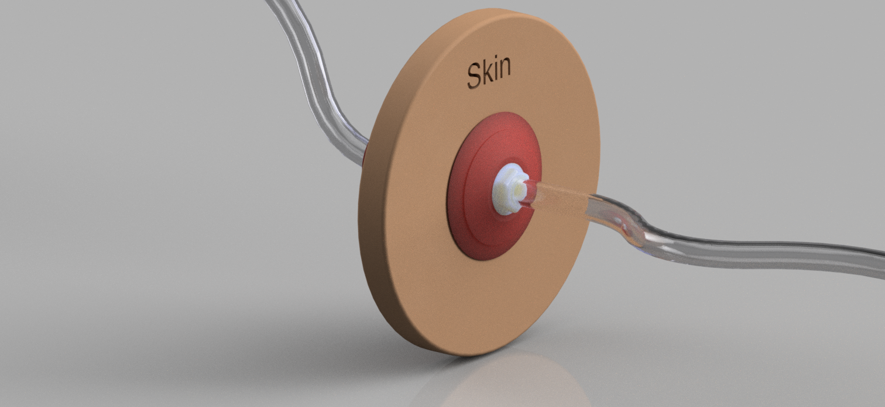
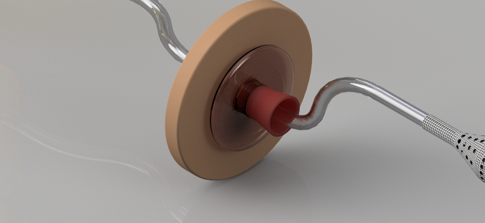
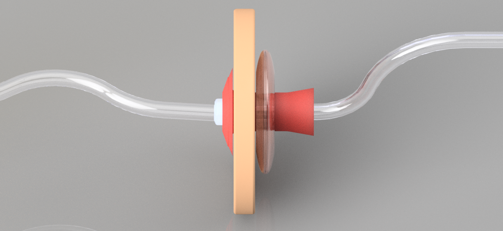
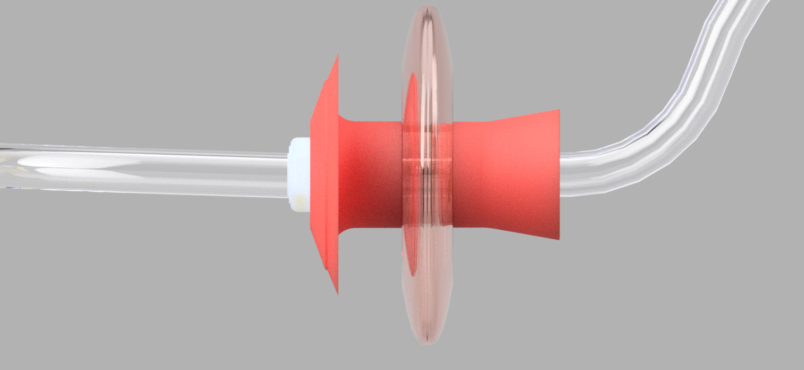
The device has a deployment tool for placement.
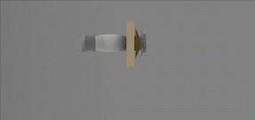
The tool is inserted and the balloon stretches into a cylinder for insertion.
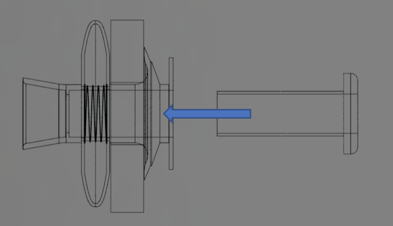
When released, the coil inside the capsule returns to its original shape, securing the drain.

Inspiration Sketches:
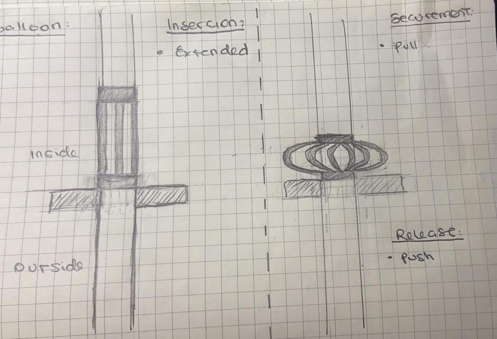
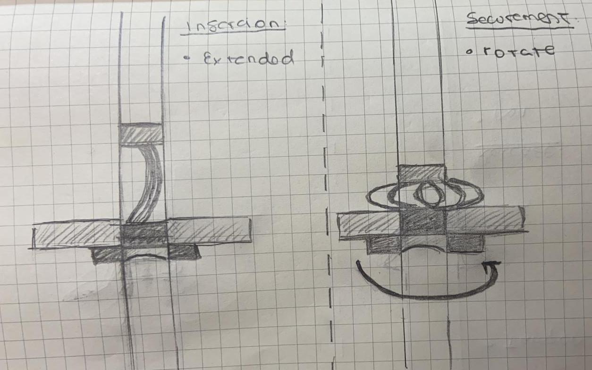
Technical Drawing of The Securement Device:

Render of The Securement Device: